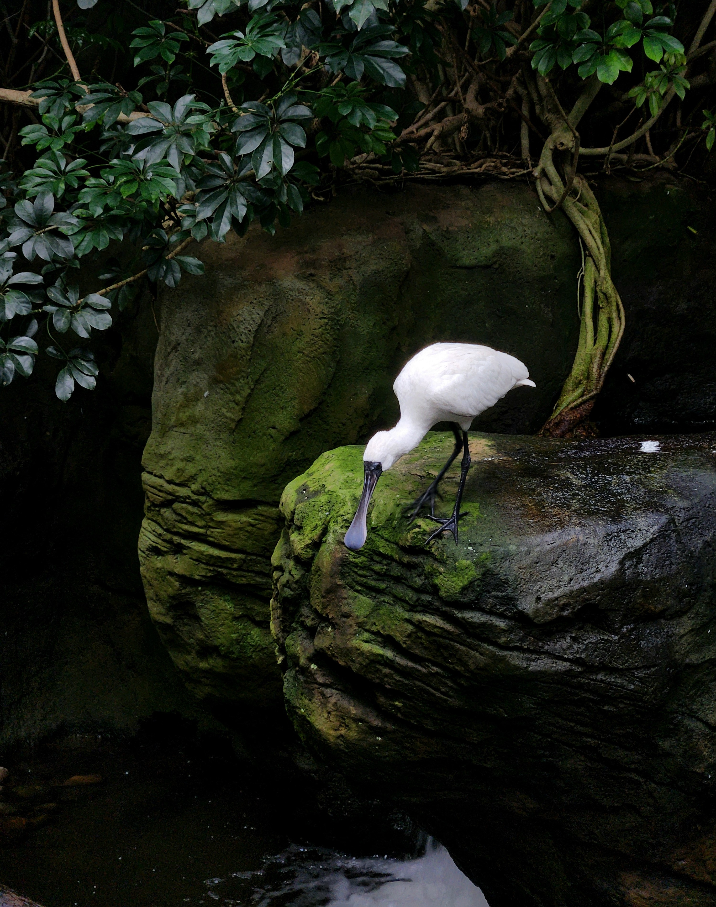

UX & UI Design.
- User Research & Usability Testing
- Wireframing & Prototyping
- Intuitive & Accessible Solutions
From research to refined interfaces:
I design inclusive experiences at the intersection of human behaviour and modern technology.
Work across UX & UI Design, Interaction Design and Product Design — from problem research to refined prototypes.
Worked & studied with
I'm a UX/UI Designer with a strong background in Media Informatics, combining thoughtful design with a solid understanding of technology. My work focuses on creating usable, engaging and inclusive interfaces that connect people across contexts, cultures, and abilities.
Whether collaborating in interdisciplinary teams or working independently, I value structured thinking, open communication, and design decisions grounded in user needs. I enjoy turning complex ideas into intuitive experiences. I'm always curious to explore new tools, methods, and continue learning.
Ludwig Maximilian University Munich — Focus on UX Design, HCI, Frontend Development, IT Security & Ethics
University of Technology Sydney — Interaction Design & Internet Programming
Ludwig Maximilian University Munich — Focus on HCI, Computer Science, & Media Design
University of Technology Sydney — Interaction Design & 2D/3D Animation
MVTec GmbH — UX/UI Design of Computer Vision & Deep Learning Software
Ströer SE & Co. — Content Creation & Design for Public Displays
Ms. Manicke possessed a high level of expertise that enabled her to consistently achieve above-average work results. She consistently impressed with her exceptionally high level of commitment and initiative. In all situations, she consistently achieved excellent results. Ms. Manicke always performed her role to our fullest satisfaction and met our expectations in every respect in the best possible way. Due to her friendly and helpful manner, Ms. Manicke was also highly valued by our clients and business partners.
Human Resources · Infoscreen GmbH, Ströer SE & Co.
Ms.Manicke has demonstrated remarkable aptitude and enthusiasm for Interaction Design. Her participation in my courses was characterised by strong aesthetical skills, creativity, and interest in how interactive technologies influence social interactions and user experiences. She approached each assignment, and the particular final project with a high level of professionalism and curiosity, exhibiting strong teamwork and producing work that exceeded expectations. Her ability to conceptualise and develop integrated solutions to complex problems was particularly notable.
Academic & Researcher · University of Technology Sydney
She approached every task with a high level of professionalism, enthusiasm, and curiosity and consistently exceeded expectations. I was particularly impressed by her ability to develop versatile concepts and to implement these ideas visually in a creative and well-thought-out way. In addition to her academic strengths, Ms. Manicke also brings extensive professional experience. Her experience has provided her with additional practical knowledge and a solid understanding of design practice and user interaction and underlines her ability to apply theoretical knowledge to practical challenges.
Prof. of Media Informatics · LMU Munich
"Designing with purpose. Solving problems and creating experiences that make people's lives a little easier."
I believe that every challenge has a thoughtful solution.
Curiosity, empathy, and new perspectives from everyday life continuously shape how I design and solve problems.
